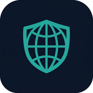

Instalabilitas
- Konteks aman (HTTPS/localhost)
- Manifest terbaca
- Ikon 192 & 512 tersedia
- Service worker aktif
- Mode tampilan standalone

NevusQuetta PWA
NevusQuetta menegakkan HTTPS-only, mengirim Global Privacy Control
(Sec-GPC: 1) pada setiap permintaan, memblokir pelacak sebelum
keluar jaringan, dan menolak izin sensitif secara default. Versi PWA bekerja
offline setelah kunjungan pertama dan dapat dipasang ke layar utama.
| Invarian | Ditegakkan oleh |
|---|---|
| HTTPS-only untuk navigasi | Service worker (fallback) + kebijakan host |
Sec-GPC: 1 setiap permintaan | Aplikasi induk (proxy) — tidak dapat dari PWA saja |
Tidak menyimpan respons ber-Set-Cookie | isCacheableResponse() |
| Tidak menyimpan lintas-origin | isCacheableResponse() |
| Update tidak otomatis tanpa persetujuan | Tanpa skipWaiting() pada install |
Sebuah PWA tidak dapat menjadi browser: ia tidak dapat menjadi
penangan protokol default, tidak dapat memblokir permintaan dari tab lain,
dan tidak dapat menetapkan header pada permintaan lintas-origin yang
dilakukan halaman pihak ketiga. Karena itu Sec-GPC pada PWA hanya
berlaku untuk permintaan same-origin yang lewat service worker ini.
PWA ini melengkapi — bukan menggantikan — aplikasi Android dan Chromium.